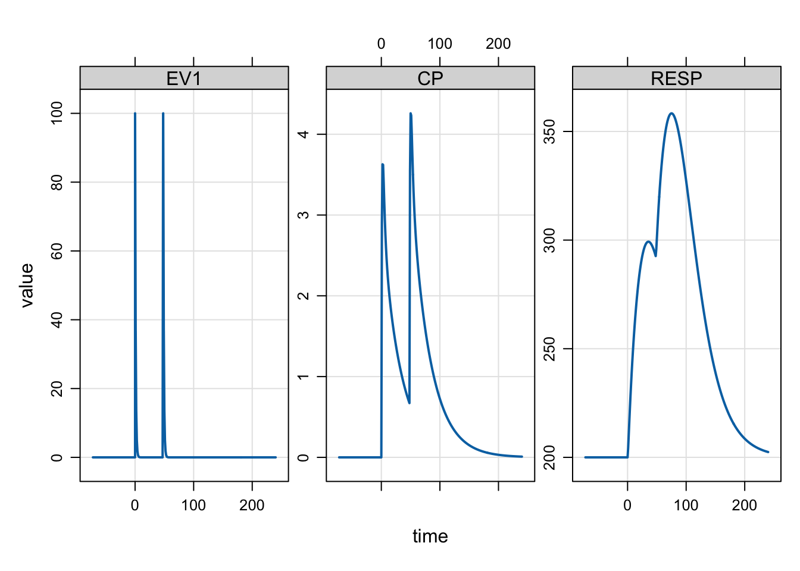

library(dplyr)
library(mrgsolve)1 Introduction
This blog post introduces some new features / new behavior with mrgsolve versions 0.11.0 and 0.11.1.
2 Dynamic capture
This is one of my favorite new features. I’ve written about it before, but as a review: we added a capture argument to mread() so you can opt in to capture additional model variables in the simulated output.
For example, let’s look at this model:
mod <- modlib("irm1")Building irm1 ... done.outvars(mod)$cmt
[1] "EV1" "CENT" "PERIPH" "RESP" "EV2"
$capture
[1] "CP"You can see the compartments (cmt) and other model variables that are getting captured (capture).
2.1 See model variables
We can now look into the model and see which variables are available to capture. First, coerce mod to a list() and then look at the cpp_variables item:
cpp_variables <- as.list(mod)$cpp_variables
cpp_variables type var context
1 define CP global
2 define CT global
3 define CLNL global
4 define INH globalThis tells us what we could capture. Now that we have the information, let’s capture everything possible:
mod <- modlib("irm1", capture = cpp_variables$var)Building irm1 ... done.Now, everything is getting captured:
outvars(mod)$cmt
[1] "EV1" "CENT" "PERIPH" "RESP" "EV2"
$capture
[1] "CP" "CT" "CLNL" "INH" and will appear in the simulated output:
mrgsim(mod, events = ev(amt = 100), param = list(VMAX = 2))Model: irm1
Dim: 26 x 11
Time: 0 to 24
ID: 1
ID time EV1 CENT PERIPH RESP EV2 CP CT CLNL INH
1: 1 0 0.0000 0.00 0.000 5.000 0 0.000 0.0000 1.0000 0.0000
2: 1 0 100.0000 0.00 0.000 5.000 0 0.000 0.0000 1.0000 0.0000
3: 1 1 36.7879 57.40 3.221 2.837 0 2.870 0.3221 0.4107 0.5893
4: 1 2 13.5335 70.69 8.641 1.988 0 3.534 0.8641 0.3614 0.6386
5: 1 3 4.9787 69.58 13.484 1.834 0 3.479 1.3484 0.3650 0.6350
6: 1 4 1.8316 64.48 17.119 1.875 0 3.224 1.7119 0.3828 0.6172
7: 1 5 0.6738 58.87 19.596 1.970 0 2.943 1.9596 0.4046 0.5954
8: 1 6 0.2479 53.77 21.135 2.078 0 2.689 2.1135 0.4266 0.5734In this example, we could choose from a bunch of pre-processor directives, but the only reason for that is this is the way the model was coded. We can look at another example:
mod <- modlib("pbpk")Building pbpk ... done.as.list(mod)$cpp_variables %>% head() type var context
1 double Vad main
2 double Vbo main
3 double Vbr main
4 double Vgu main
5 double Vhe main
6 double Vki main2.2 Why would I use this???
Here’s an example: I have a covariate model going and I want to get parameter values given some covariates. I can write:
mod <- modlib("popex", capture = "CL,V,KA") %>% zero_re()Building popex ... done.idata <- tibble(WT = seq(40,140,5))
mrgsim(mod, idata = idata, end = -1)Model: popex
Dim: 21 x 10
Time: 0 to 0
ID: 21
ID time GUT CENT CL V ECL IPRED DV KA
1: 1 0 0 0 0.6572 13.71 0 0 0 0.5
2: 2 0 0 0 0.7179 15.43 0 0 0 0.5
3: 3 0 0 0 0.7770 17.14 0 0 0 0.5
4: 4 0 0 0 0.8345 18.86 0 0 0 0.5
5: 5 0 0 0 0.8908 20.57 0 0 0 0.5
6: 6 0 0 0 0.9459 22.29 0 0 0 0.5
7: 7 0 0 0 1.0000 24.00 0 0 0 0.5
8: 8 0 0 0 1.0531 25.71 0 0 0 0.5Now, I have CL, V and KA all calculated as a function of WT.
3 Simulate with negative times
Until 0.11.0, it was an error whenever negative times were requested in the simulation. Now, negative times are accepted without error.Keep in mind that the data set still needs to be sorted by time when passing data.
As an example:
mod <- modlib("irm2") %>% param(KOUT = 0.05)Building irm2 ... done.sims <-
mod %>%
ev(amt = 100, ii = 48, addl = 1) %>%
mrgsim(start = -72, end = 240)
simsModel: irm2
Dim: 314 x 8
Time: -72 to 240
ID: 1
ID time EV1 CENT PERIPH RESP EV2 CP
1: 1 -72 0 0 0 200 0 0
2: 1 -71 0 0 0 200 0 0
3: 1 -70 0 0 0 200 0 0
4: 1 -69 0 0 0 200 0 0
5: 1 -68 0 0 0 200 0 0
6: 1 -67 0 0 0 200 0 0
7: 1 -66 0 0 0 200 0 0
8: 1 -65 0 0 0 200 0 0plot(sims, "EV1 CP RESP")
4 Path to NM results using NMEXT and NMXML
This is pretty subtle issue but I’ve grown very sensitive to it recently and decided we needed to change this.
When you use the $NMEXT or $NMXML blocks, you are asking mrgsolve to import THETA, OMEGA and / or SIGMA from a completed NONMEM run. And we need to specify the path to those results.
So far, we have had you typically specify the path relative to the current working directory. This was ok, but problems happened if you wanted to use the model from a different working directory (you’d get an error).
So we added an argument called root to $NMEXT and $NMXML that lets you change how that path is interpreted.
4.1 Root path
The current default behavior is to interpret the path relative to the current working directory:
[ nmext ]
run = 1001
project = "../model/nonmem"This is equivalent to invoking the new root argument and setting it to "working":
[ nmext ]
run = 1001
project = "../model/nonmem"
root = "working"I am encouraging you to start setting this root argument to "cppfile" which tells mrgsolve to interpret the path relative to wherever the model code is located:
[ nmext ]
run = 1001
project = "../model/nonmem"
root = "cppfile"When you do this, you can load this model from any working directory as long as the file remains in the same location. I am encouraging you to start using this because I think we will eventually make "cppfile" the default root because it makes so much more sense.
Note that you can always specify an absolute path here and in that case, it doesn’t matter what you use for the root argument (see the discussion on here() in the following section).
With here()
Some are also using the here::here() function. This is totally independent of any mrgsolve functionality, but here() will return the absolute path relative to your Rstudio project root. So, if all my models were in the model/nonmem directory, I can always get the absolute path using here() regardless of the working directory and regardless of where the cpp file is located.
[ nmext ]
run = 1001
project = here::here("model/nonmem")Note here that the argument / options here are evaluated by the R interpreter so that the here() call resolves to the correct project directory.
4.2 Select table number in NMEXT
The [ nmext ] block gains an index argument that will let you select which table in the .ext file to import from when there are multiple.
- the default is
last - otherwise, pass an integer (e.g. 1 for first, 3 for 3rd)
- see the
?nmexthelp topic for more info on this and other argument / options for thenmxmlblock
To select the 2nd table:
[ nmext ]
run = 1001
project = "../model/nonmem"
root = "cppfile"
index = 2 The default is to select the last table:
[ nmext ]
run = 1001
project = "../model/nonmem"
root = "cppfile"
index = "last" // "first"4.3 Reveal results file
When you import nonmem results from an .ext file (via [nmext]) or an .xml file (via [nmxml]), the source file is now saved in the model object so that it can be checked later.
The internal model library contains an embedded nonmem run numbered 1005; this run imports THETA, OMEGA and SIGMA from a finished nonmem run. You can load this model with the modlib() function.
mod <- modlib("1005")Loading required namespace: xml2Building 1005 ... done.By coercing the model to list and checking the nm_import item, you’ll get a character vector with the full (absolute) path to either the .ext or .xml file that was imported from
as.list(mod)$nm_import[1] "/Users/kyleb/renv/renv/library/R-4.4/aarch64-apple-darwin20/mrgsolve/nonmem/1005/1005.xml"5 Programmatic block initialization
I don’t expect you’ll be using this much but when you need it it will come in handy.
For example, let’s say you wanted to write a model with a 30 x 30 omega matrix. This would be a pain to code given the current syntax for $OMEGA. I recently refactored and standardized the way you can initialize this block programmatically.
code <- '
$OMEGA @as_object
matrix(0, nrow = 30, ncol = 30)
'
mod <- mcode("omega", code, compile = FALSE)
omat(mod)We didn’t run the code because the screen would fill up, but you can try it. You will see that $OMEGA is a 30 x 30 matrix and it was easy to code. Obviously, you’ll have to update this with all the elements but we have given you the ability to easily initialize this matrix.
In the example, we used the @as_object directive. The other way to do it would be to create the object in $ENV and then use @object:
$ENV
foo <- matrix(0, nrow = 30, ncol = 30)
$OMEGA @object fooWith this approach, use @object and then name the object that you want to use to populate the block.
Other blocks that you can use this programmatic initialization:
$SIGMA- return a matrix$CMT- return a character vector of compartment names$INIT- return a named list$PARAM- return a named list$THETA- return a numeric vector$FIXED- return a named list
For example:
code <- '
$PARAM @as_object
x <- seq(1,26)
names(x) <- letters
as.list(x)
'
mod <- mcode("letters", code, compile = FALSE)
param(mod)
Model parameters (N=26):
name value . name value
a 1 | n 14
b 2 | o 15
c 3 | p 16
d 4 | q 17
e 5 | r 18
f 6 | s 19
g 7 | t 20
h 8 | u 21
i 9 | v 22
j 10 | w 23
k 11 | x 24
l 12 | y 25
m 13 | z 26 6 Check User Interrupt
Starting with version 0.11.1, we will start periodically checking for the user interrupt signal (Esc or Control-C) as the simulation proceeds. This will let you kill a long-running simulation mid-stream. You can change the check interval by the interrupt argument to mrgsim(). Reduce the number to check more frequently and pass -1 to not check at all.